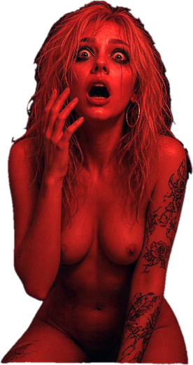

СИСТЕМА ЗАБЛОКИРОВАНА // SYSTEM ZABLOKOWANY
КИБЕРДЕКА АРХИВ // УЗЕЛ 539A
ARCHIVE OS v9.4 // ODSTRZAŁ CORE
> НАЖМИТЕ ДЛЯ ЗАПУСКА // KLIKNIJ ABY URUCHOMIĆ <

user@cyber-terminal:~$
SYS.MONITOR // NODE 539A
[ HARDWARE STATUS ]
CPU LOAD :
[██████░░░░] 60%
RAM ALLOC:
[████░░░░░░] 40%
NET UPLINK:
SECURE // ENCRYPTED
CORE TEMP:
42°C